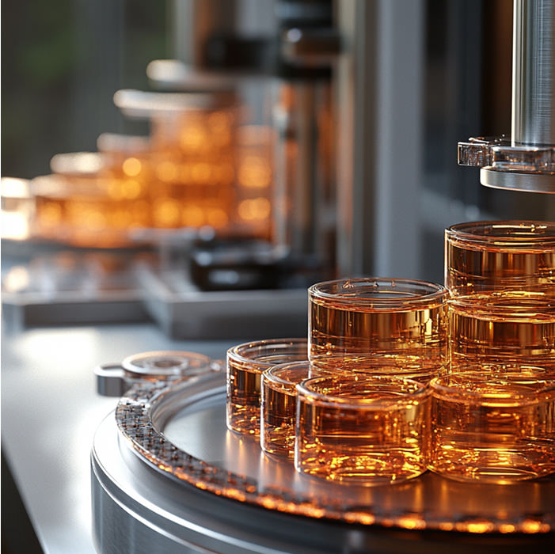
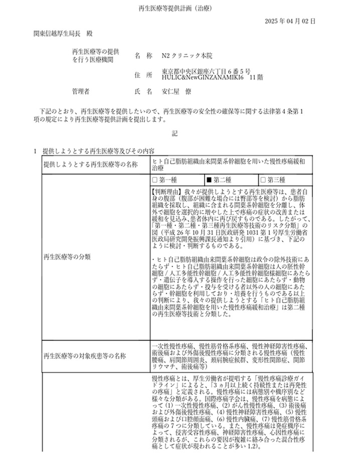
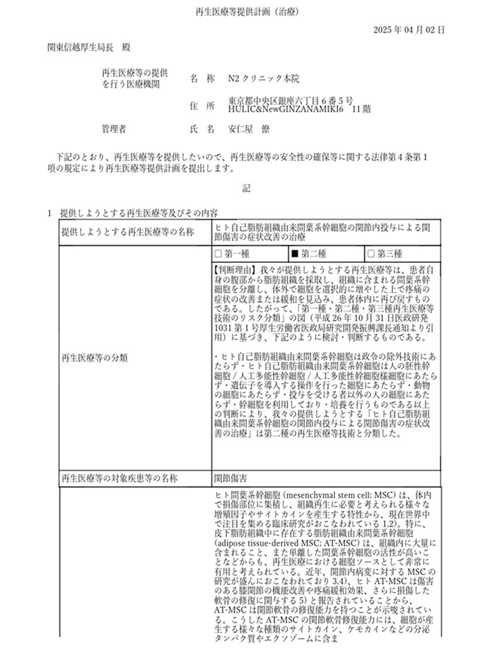
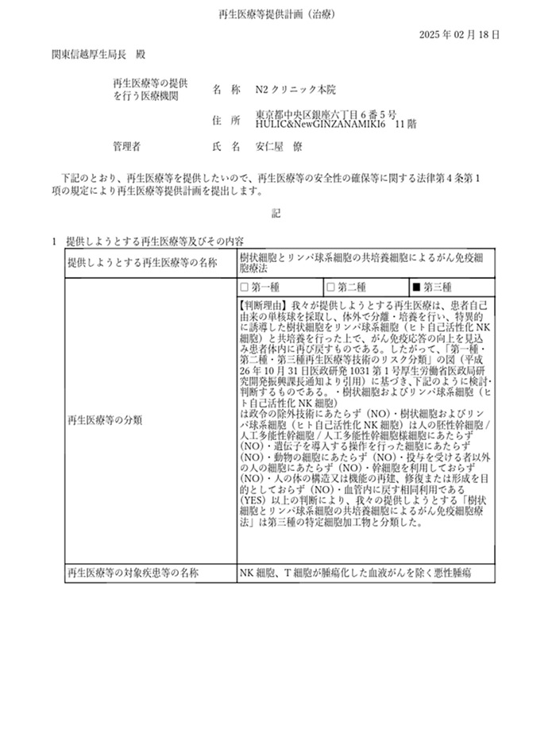
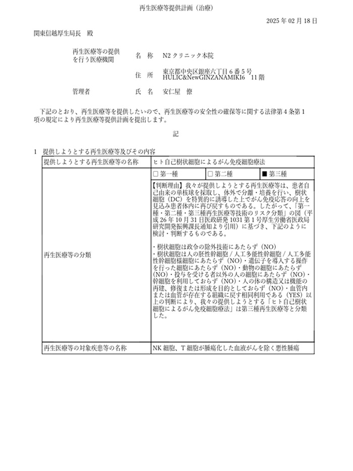
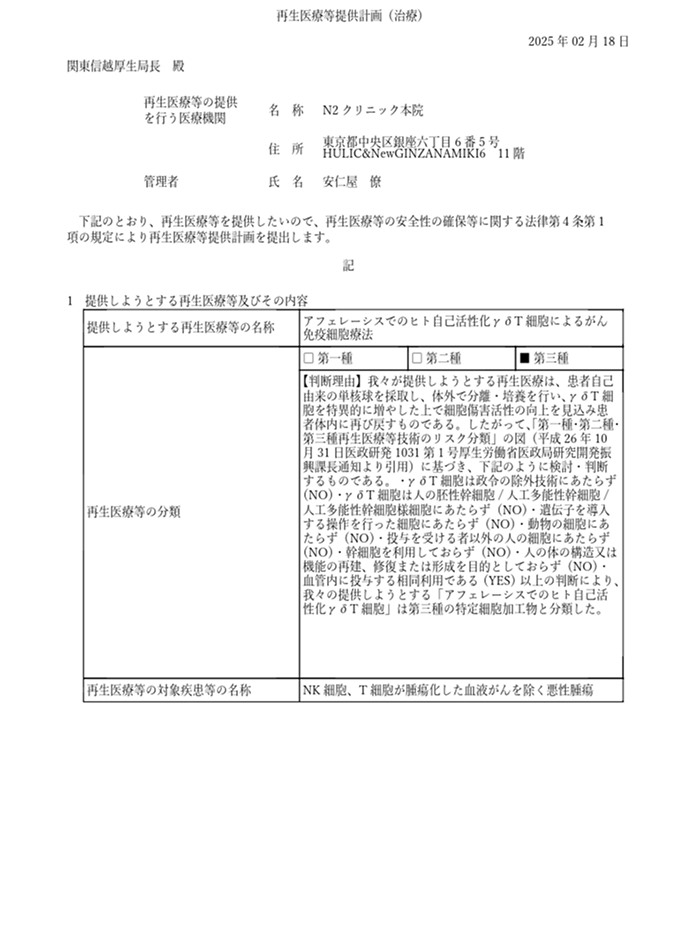
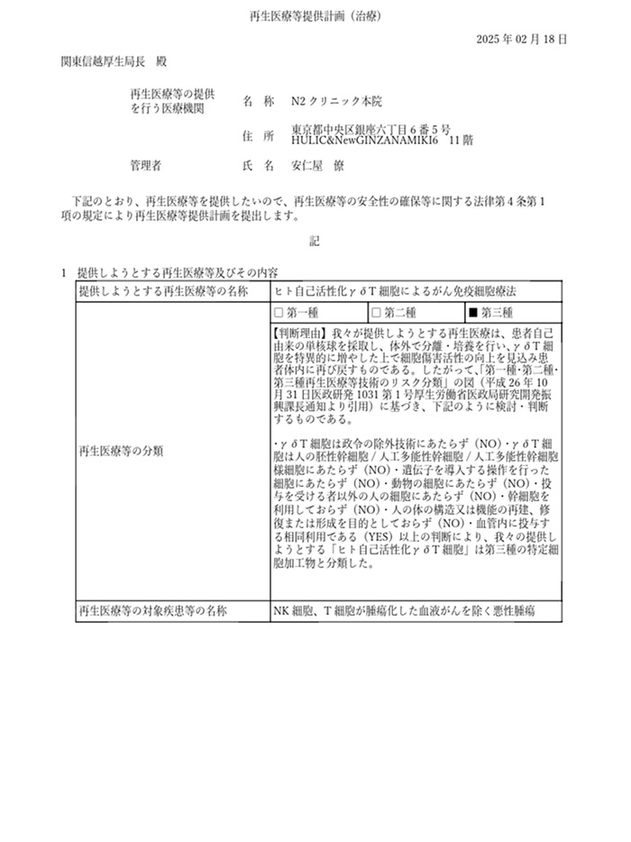
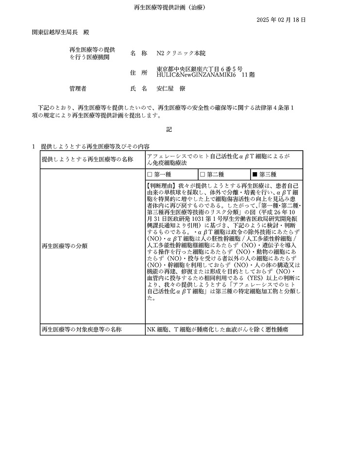
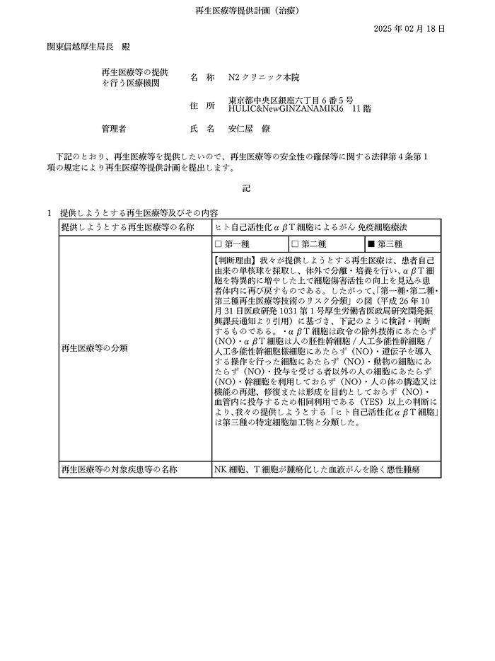
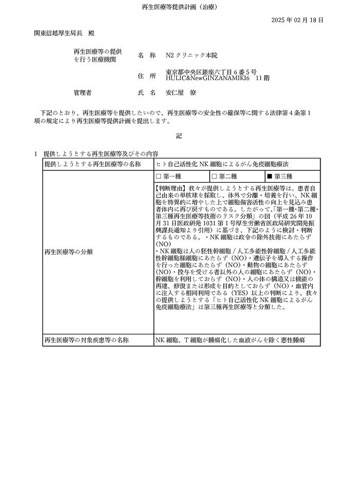

N2クリニックとは
ABOUT US

N2クリニックの歩み
〜 再生医療の頂を目指して〜
2015年、東京・代官山にて、N2クリニックは誕生しました。
再生医療がまだ一般に広く知られていなかった時代、私たちは幹細胞および免疫細胞に特化した専門クリニックとして、「科学に基づいた、真の予防と若さの追求」という明確なビジョンを掲げ、歩みを始めました。
再生医療がまだ一般に広く知られていなかった時代、私たちは幹細胞および免疫細胞に特化した専門クリニックとして、「科学に基づいた、真の予防と若さの追求」という明確なビジョンを掲げ、歩みを始めました。
2024年には、日本が世界で初めて「再生医療等の安全性の確保等に関する法律」を施行。
N2クリニックは、厚生労働省への届出・厳格な審査を経て、認可を受け、法制度に完全準拠した再生医療の提供機関として、その信頼を築いてまいりました。
N2クリニックは、厚生労働省への届出・厳格な審査を経て、認可を受け、法制度に完全準拠した再生医療の提供機関として、その信頼を築いてまいりました。
世界中の富裕層に応える拠点展開
増加する国内外からのニーズに応えるべく、私たちは次のステージへと進みました。
- 2014年 ─ 東京都渋谷区代官山にN2クリニック代官山初開院
- 2021年 ─ 東京都千代田区「ホテル椿山荘東京」内に、N2クリニック ホテル椿山荘東京院を開院
- 2022年 ─ 東京・四谷にて、N2クリニック四谷院を開院
- 2022年 ─ 海外展開として、N2クリニック ベトナムを開院
- 2025年 ─ 銀座院を移転・拡張し、N2クリニック銀座本院として再始動。より洗練された空間と医療体制を整えました。
N2クリニックは、10年にわたる信頼と実績をもとに、アジアにおける再生医療のリーディングクリニックとして、世界中の方々の「真の健康と若さ」の実現をサポートしてまいります。
CERTIFIED
国の認可を受けた確かな医療
安全性と有効性を両立するための揺るぎない基準
治療は全て厚生労働省認定の特定認定再生医療等委員会による審査を経て、「再生医療提供計画番号」を取得したうえで実施しています。
国の認可を受けたプロトコルに基づき、安全性と有効性が厳格に担保された医療をご提供し、患者さまには安心して最先端の再生医療をお受けいただける体制を整えています。
医療連携とエビデンス構築への取り組み
- 都内大学病院・総合病院との連携
緊急時の検査や専門的な対応が必要な場合にもすぐに連携できる体制を構築。 どのようなケースにも迅速に最適な医療を提供できることが、患者様の安心につながります。 - 院内外の臨床研究と最新情報のキャッチアップ
国内外の最新研究情報を常に確認し、院内で臨床研究を行うことでエビデンスを蓄積。その成果を速やかに治療に反映し、安全かつ効果的なプロトコルを維持しています。

こだわり抜いた細胞培養の品質
再生医療において、治療に用いる細胞の品質や、それを支える技術の信頼性は非常に重要です。
当クリニックの治療を支える細胞培養は、N2クリニック四谷院長が代表を務めるバイオセラピー研究所との連携により、高度な品質管理・無菌環境・正確性のもとで行われています。
私たちは、患者様一人ひとりに安心して治療を受けていただける環境を提供し、すべての細胞製品において、富裕層のお客様の期待に応える最高水準の安全性と品質を保証いたします。
以下は、厚生労働省認定特定 再生医療等委員会より発行された、当院の再生医療提供計画番号取得を証明する認可書類です。
国の厳格な審査を経て取得した計画番号は、当院の取り組みと信頼を裏付けるものです。（一部抜粋）
国の厳格な審査を経て取得した計画番号は、当院の取り組みと信頼を裏付けるものです。（一部抜粋）

全文は院内でご確認いただけます。

全文は院内でご確認いただけます。

全文は院内でご確認いただけます。

全文は院内でご確認いただけます。

全文は院内でご確認いただけます。

全文は院内でご確認いただけます。

全文は院内でご確認いただけます。

全文は院内でご確認いただけます。
全文は院内でご確認いただけます。

全文は院内でご確認いただけます。
ACCESS
クリニックへのご案内
N2クリニック銀座本院
住所：東京都中央区銀座6丁目6-5 HULIC &New GINZA NAMIKI6 11階
TEL：03-3289-0202
診療時間：10:00〜18:30
休診日：日曜日
休診日：日曜日
最寄駅
各線銀座駅B5番出口より 徒歩4分
各線銀座駅B5番出口より 徒歩4分